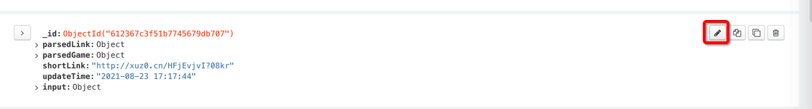
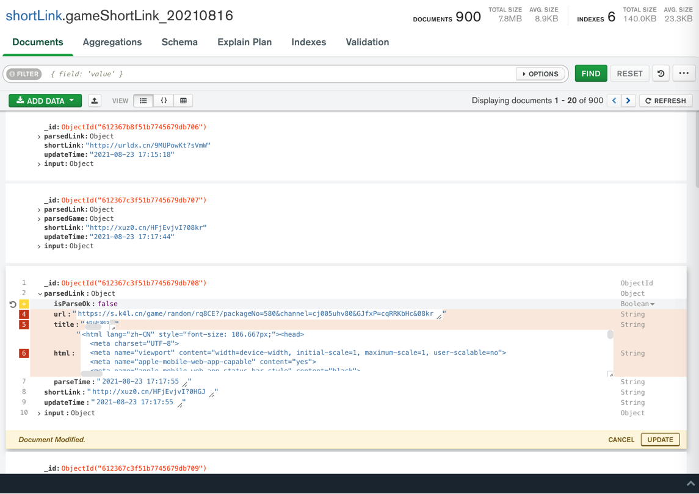
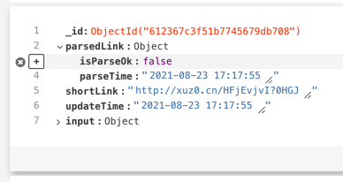

MongoDB Compass心得
编辑功能很好用
举例：
点击编辑：

或 双击字段的值，即可进入编辑模式
去编辑第三条数据，删除：parsedGame部分
鼠标移动到 改字段前面，点击 x 叉号：

再点击 右下角的 UPDATE，即可删除对应字段。
再去改 parsedLink中的值：
把parsedLink中的isParseOk从true，改为 false
以及删除其他几个字段：

新增字段：
鼠标移动到要加的位置，点击 加号=➕：

显示Add Field after isParseOk，点击

新增了一项：